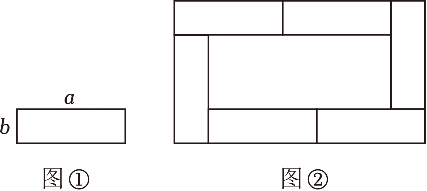
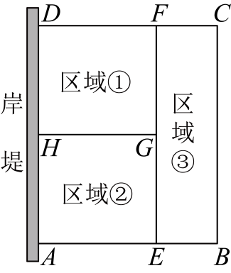
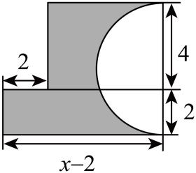
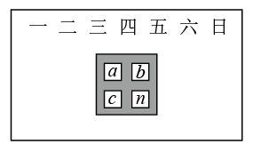
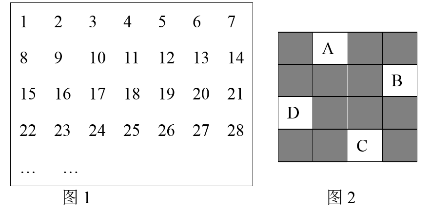
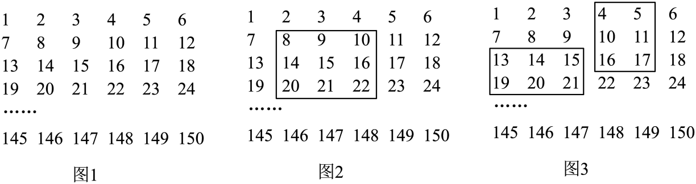

专题02 整式的应用（举一反三专项训练）
【北师大版2024】

【题型1 周长问题】 1
【题型2 面积问题】 2
【题型3 分段计费问题】 4
【题型4 方案选择】 5
【题型5 月历问题】 7
【题型6 数阵问题】 8
【题型7 数字问题】 10
【题型8 整除问题】 10
【题型9 幻方问题】 11

【题型1 周长问题】
【例1】（24-25七年级上·北京朝阳·期中）用6个如图①所示的长为a，宽为b的长方形，拼成一个如图②所示的图案，得到两个大小不同的长方形．

(1)请用含a，b的代数式，分别表示大长方形和小长方形的周长．
(2)若a=32，b=103，求两个长方形的周长差．
【变式1-1】（24-25七年级上·安徽宣城·期中）为了节省材料，某水产养殖户利用水库的岸堤（岸堤足够长）为一边，用围网在水库中围成了如图所示的①、②、③三块长方形区域，这三块区域面积相等，其中区域③的一边长 CF为 a 米，另一边长BC为 b 米．

(1)宽DF的长度为 米；
(2)围成养殖场围网的总长度为多少米.（用含a，b的式子表示）
(3)当a=30、b=60时，求围网的总长度．
【变式1-2】（24-25七年级上·河南驻马店·期中）如图，一个长方形运动场被分割成A，A，B，B，C共5个区域，A区域是边长为am的正方形，C区域是边长为cm的正方形．
(1)①B区域长方形场地的长是___________m，宽是___________m；
②列式表示一个B区域长方形场地的周长，并将式子化简．
(2)列式表示整个长方形运动场的周长，并将式子化简；当a=4,c=2时，求整个长方形运动场的周长．
【变式1-3】（24-25七年级上·江苏常州·期中）如图，某体育公园有一块长为110米，宽为90米的长方形运动场地．场地中间有两块运动区域，分别记作①号和②号区域．阴影部分为人行通道，两条横向通道和三条纵向通道的宽度均相等．已知①号区域的形状是正方形，边长为a米，②号区域的形状是长方形．

(1)当a=80时，人行通道的宽度为 ____米；②号区域的周长 ____米；
(2)求②号区域的周长（用含a的代数式表示）．
【题型2 面积问题】
【例2】如图，已知哈市某展览馆要对一个长方形展厅进行升级改造，展厅的长为40米，中间展区部分是长方形，其宽为10米，四周是等宽的过道（单位：米）．

(1)用含x的式子分别表示中间展区和过道的面积；
(2)若x=10，升级过道的费用为每平方米60元，升级展区的费用为每平方米200元，则升级这个展厅的总费用为多少元？
【变式2-1】如图，在长方形ABCD中，E，F分别是边AB，BC上一点，连接DE，DF．

按图中各部分尺寸解决下列问题：
(1)用含x的代数式表示阴影部分的面积；
(2)当x=2时，求阴影部分的面积．
【变式2-2】（24-25七年级上·云南昆明·阶段练习）小颖家买了一套经济适用房，她准备将地面铺上地砖，地面结构如图所示，根据图中的数据（单位：m），解答下列问题：

(1)客厅的面积是______m2．
(2)用含x，y的式子表示这套房子的总面积（写出必要的过程，结果保留最简形式）．
【变式2-3】（24-25七年级上·广东肇庆·期中）某小区的两块紧挨在一起的长方形空地的平面图如图所示（图中长度单位：m），现该小区管理者要在此空地上修建一个半圆形花圃，其余部分进行硬化．

(1)求硬化部分的面积（用含x的代数式表示）；
(2)当x=10时，求硬化部分的面积（结果保留π）．
【题型3 分段计费问题】
【例3】（24-25七年级上·辽宁大连·期中）我市居民使用自来水按如下标准收费（水费按月缴纳）：
户月用水量 | 单价 |
不超过15m3的部分 | a元/m3 |
超过15m3但不超过20m3的部分 | 1.5a元/m3 |
超过20m3的部分 | 2a元/m3 |
(1)当a=2时，某用户一个月用了22m3水，求该用户这个月应缴纳的水费．
(2)设某户月用水量为x立方米，当x>20时，则该用户应缴纳的水费__________元（用含a，x的代数式表示）．
(3)当a=2时，甲、乙两用户一个月共用水40m3，已知甲用户缴纳的水费超过了30元，设甲用户这个月用水xm3，试求甲、乙两用户一个月共缴纳的水费（用含x的代数式表示）．
【变式3-1】（24-25七年级上·湖北武汉·阶段练习）学校计划订购数学益智玩具魔万和数独棋，经调查发现，同一款式的魔方和数独棋在甲、乙两家商店标价均相同，其中魔方每个标价10元，数独棋每个标价40元．两家商店分别展开了不同的促销活动，优惠方式如下：
甲商店：魔方和数独棋都按9折出售．
乙商店：买两个数独棋送一个魔方．
学校计划订购数独棋40个，魔方若干（多于20）个，单独在甲商店或者乙商店购买．
(1)若订购魔方的数量是30个，如果在甲商店订购的总费用是______元，在乙商店购买魔方和数独棋的总费用是______元？
(2)当订购魔方的数量是多少个时，在甲、乙两家商店购买魔方和数独棋的总费用相同？
(3)根据魔方的购买数量，设计一种省钱的订购方案．
【变式3-2】某经销商去水产批发市场采购大闸蟹，他看中了A、B两家的某品质相近的大闸蟹，零售价均为60元/千克，批发价各不相同．
A家规定：批发数量在100千克以内（含100千克）时，顾客购买的大闸蟹均按零售价的92%优惠：批发数量超过100千克但不超过200千克时，顾客购买的大闸蟹均按零售价的90%优惠；批发数量超过200千克时，顾客购买的大闸蟹均按零售价的88%优惠；
B家规定：优惠方案如下表：
数量范围（千克） | 0～50部分 | 50以上～150部分 | 150以上部分 |
价格（元） | 零售价的95% | 零售价的85% | 零售价的75% |
【表格说明：价格分段计算，如：某人批发大闸蟹180千克，则总费用=60×95%×50+60×85%×
100+60×75%×180−150】
(1)如果他批发x千克大闸蟹（0<x<50），求他在A、B两家批发各需要多少元？（用x含的式子表示）
(2)如果他批发x千克大闸蟹（150<x<200），求他在A、B两家批发各需要多少元？（用含x的式子表示）
(3)现在他要批发195千克大闸蟹，你能帮他选择在哪家批发更省钱吗？请说明理由．
【变式3-3】（24-25七年级上·湖南株洲·期中）为鼓励居民节约用电，某市电力公司采用分段计费方式计算电费：每月用电不超过180度时，按每度0.5元计费：每月用电超过180度但不超过280度时，其中的180度仍按原标准收费，超过部分按每度0.6元计费．收费标准如表：
用电量 | 不超过180度 | 超过180度但不超过280度的部分 | 超过280度的部分 |
收费标准（元/度） | 0.5 | 0.6 | 0.8 |
(1)若小明家10月用电量为160度，则他们家10月的电费是_____元．
(2)若小明家11月用电量为230度，则他们家11月的电费是_____元．
(3)若小明家12月用电量为x度；请用含x的代数式表示他们家12月应缴的电费．
【题型4 方案选择】
【例4】（24-25七年级上·天津河东·期末）某商场开展促销活动，出售甲、乙两种商品，活动方案有如下两种：
甲商品 | 乙商品 | |
售价（单位：元） | 100 | 20 |
促销方案一 | 买一件甲商品，赠送一件乙商品 | |
促销方案二 | 甲商品和乙商品都打九折 | |
（备注：参加方案一，则不能参加方案二；参加方案二，则不能参加方案一）
(1)若某单位购买甲商品x件，购买乙商品的件数比甲商品多20件，
选用方案一需花费________元；
选用方案二需花费________元；（用含x的代数式填空）
(2)在（1）问的条件下，请问购买甲商品多少件时，选择方案一与选择方案二的花费相同？
(3)请根据购买甲商品的件数x的不同范围，直接写出选择哪种促销方案更合适．
【变式4-1】（24-25七年级上·湖南衡阳·期末）某学校准备组织部分教师到郴州旅游，现联系了甲、乙两家旅行社，两家旅行社报价均为300元/人，同时两家旅行社都对10人以上的团体推出了优惠方案：甲旅行社对每位游客八折优惠；而乙旅行社是免去一位老师的费用，其余老师九折优惠．
(1)如果设参加旅游的老师共有xx>10人，则用含x的代数式分别表示甲、乙旅行社的费用；
(2)假如某校组织20名教师到郴州旅游，该校选择哪一家旅行社比较优惠？请说明理由．
【变式4-2】某校决定为体育组添置一批体育器材．学校准备在网上订购一批某品牌足球和跳绳，在查阅天猫网店后发现足球每个定价140元，跳绳每条定价30元．现有A、B两家网店均提供包邮服务，并提出了各自的优惠方案．A网店：买一个足球送一条跳绳；B网店：足球和跳绳都按定价的90%付款．已知要购买足球60个，跳绳x条（x>60）．
(1)若在A网店购买，需付款 元（用含x的代数式表示）；若在B网店购买，需付款 元（用含x的代数式表示）；
(2)若x=100时，通过计算说明此时在哪家网店购买较为合算？
(3)当x=100时，你能给出一种更为省钱的购买方案吗？试写出你的购买方法，并计算需付款多少元？
【变式4-3】（24-25七年级上·福建厦门·期末）某化工厂每天产生超过100吨的工业废水，为使排放的工业废水达到国家的排放标准，建设了一座工业废水处理站．该处理站无论是否处理废水，都需要支付设备维护费用200元/天，且处理废水还需其他费用5元/吨．随着生产规模的扩大，该废水处理站已无法完成当天工业废水的处理任务，需要将一部分废水交给第三方企业处理，该企业处理工业废水的价格如表二所示．
表二
收费方式 | 废水处理量/吨 | 费用 |
第一阶梯 | 0～50 | 500元 |
第二阶梯 | 50～100的部分 | 5元/吨 |
第三阶梯 | 100以上的部分 | 4元/吨 |
(1)设某天有m吨废水在处理站处理，直接写出处理站处理废水产生的总费用；
(2)若某天该工厂将一半的废水由处理站处理，另一半废水由第三方企业处理，该废水处理站处理废水产生的总费用与第三方企业处理废水产生的费用相同，求这一天该工厂产生的废水总量；
(3)经测算，扩大生产规模后，每天产生的废水量超过该处理站日废水处理量至少50吨，为实现降本增效，工厂设计了两种废水处理方案：方案A：超出该处理站的日废水处理量的废水交给第三方企业处理；方案B：保留处理站的设备，但废水全部交给第三方企业处理．根据以上信息，请帮助工厂选择最优方案，并说明理由．
【题型5 月历问题】
【例5】如图所示的是2024年2月份的月历，其中“U型”、“十字型”两个阴影图形分别覆盖其中五个数字（“U型”、“十字型”两个阴影图形可以重叠覆盖，也可以上下左右移动），设“U型”覆盖的五个数字之和为S1，“十字型”覆盖的五个数字之和为S2．若S1+S2=176，则S2−S1的最大值为（ ）

A．39 B．44 C．65 D．71
【变式5-1】在某月的月历内有一正方形方框． 已知方框里有4个数字，分别为a，b，c，n，这四个数字在方框内的位置如图所示，若用数字n分别表示a，b，c，则a+b+c= （用含有n的式子表示结果）．

【变式5-2】（24-25七年级上·甘肃庆阳·期末）如图，这是2024年2月份的月历，用带阴影的十字框框出5个数，十字框可移动位置．若设中间的数为a，则这5个数字之和为 （用含a的代数式表示）．

【变式5-3】如图，表中给出的是某月的月历，任意选取“U”型框中的7个数（如阴影部分所示），请你运用所学的数学知识来研究，发现这7个数的和不可能的是（ ）．
一 | 二 | 三 | 四 | 五 | 六 | 日 |
1 | 2（阴影） | 3 | 4（阴影） | 5 | ||
6 | 7 | 8 | 9（阴影） | 10 | 11（阴影） | 12 |
13 | 14 | 15 | 16（阴影） | 17（阴影） | 18（阴影） | 19 |
20 | 21 | 22 | 23 | 24 | 25 | 26 |
27 | 28 | 29 | 30 | 31 |
|
A．70 B．78 C．84 D．105
【题型6 数阵问题】
【例6】（24-25七年级上·陕西西安·阶段练习）如图是由非负偶数排成的数阵：

(1)填空：图中“H”形框中七个数的和是中间数的______倍；
(2)在数阵中任意做一个这样的“H”形框，（1）中的关系是否仍成立？并写出理由；
(3)用这样的“H”形框能框出和为2023的七个数吗？如果能，求出这七个数中间的数；如果不能，请写出理由．
【变式6-1】把正整数1，2，3，4，…，2020排列成如图所示的一个数表．
1 |
| 4 | 5 | 6 | 7 | |
8 |
| 11 | 12 | 13 | 14 | |
15 | 16 | 17 | 18 | 19 | 20 | 21 |
22 | 23 | 24 | …… |


用一个正方形在表中任意框住4个数（如图），把其中最小的数记为x，用含x的式子表示被框住的4个数之和是 ．
【变式6-2】（24-25七年级上·四川·期中）把正整数1，2，3，4，…，排列成如图1所示的一个表，从上到下分别称为第1行、第2行、…，从左到右分别称为第1列、第2列、…．用图2所示的方框在图1中框住表中的16个数，把其中没有被阴影覆盖的四个数分别记为A、B、C、D．

(1)在图1中，2024排在第 行，第 列；
(2)A−B+C−D的值是否为定值？如果是，请求出它的值；如果不是，请说明理由；
(3)若将图1中的偶数都改为原数的相反数，奇数不变．
①设此时图1中排在第m行第n列的数（m为正奇数，n为正整数）为w，请用含m、n的式子表示w；
②此时A−B+C−D的值能否为2020？如果能，请求出A所表示的数；如果不能，请说明理由．
【变式6-3】将连续的自然数1到150按图1的方式排列成一个方阵：

(1)在图1中，第6行的第3个数是______，第20行的最后一个数是______；
(2)如图2，用一个正方形在该方阵中任意框出9个数，请用代数方法说明这9个数之和一定是9的倍数；
(3)如图3，若用如图所示的长方形在该方阵中任意框出6个数，这6个数之和能等于156吗？如果能，请求出这6个数；如果不能，请说明理由．
【题型7 数字问题】
【例7】（24-25七年级上·陕西安康·期末）一个三位数，它的个位数字是a，十位数字是个位数字的2倍多1，百位数字比个位数字大4．
(1)用含a的式子表示这个三位数是______；
(2)若交换个位数字和百位数字，其余不变，则新得到的三位数比原来的三位数减少了多少？
【变式7-1】（24-25七年级上·黑龙江哈尔滨·期末）一个三位数，百位上的数字是a，十位上的数字是百位上的数字的2倍，个位上的数字比十位上的数字小1，这个三位数可以表示为（ ）
A．122a−1 B．121a−1 C．5a−1 D．111a−1
【变式7-2】（24-25七年级上·河南郑州·期中）一个三位数，个位数字为a，百位数字是b，把这个数的个位数字与百位数字对调后，得到一个新数，则新数与原数的差是（ ）
A．99a−99b B．99b−99a C．99a+99b D．无法确定
【变式7-3】（24-25七年级上·全国·课后作业）魔术师说：“请你任想一个两位数，将十位数字乘2，然后加3，将所得新数乘5，最后将得到的数加个位数字，只要告诉我计算结果，我就能知道你心里想的两位数．”请你解释这个魔术背后的数学道理．
【题型8 整除问题】
【例8】（24-25八年级下·重庆渝北·期中）一个四位正整数的各个数位上的数字均不为0，若满足千位数字与个位数字之和等于百位数字与十位数字之和，则称这个四位数M为“至善数”．将“至善数”M=abcd的千位数字与十位数字对调，百位数字与个位数字对调得到一个新的四位数N．
（1）若N能被9整除，且a≠d，则a+d= ；
（2）在（1）的条件下，若FM=M+N11为整数，则满足条件的所有M的最小值为 ．
【变式8-1】（2025·河南洛阳·三模）一个正两位数M，它的个位数字是a+1，十位数字是a，把M十位上的数字与个位上的数字交换位置得到新两位数N，若M+N的值能被13整除，则a的值是 ．
【变式8-2】（24-25七年级下·北京房山·期末）对于一个四位正整数T，若它的千位数字比个位数字大6，百位数字比十位数字大2，则称正整数T为“M数”．
（1）最小的“M数”为____________；
（2）一个“M数”A的千位数字为a，百位数字为b，十位数字为c，个位数字为d (a≠b)，记XA=a+b+c+d,YA=a−b，若YAXA+8能被8整除，则满足条件的A的最大值为____________．
【变式8-3】（24-25七年级下·重庆·阶段练习）一个四位自然数M，各个数位上的数字均不为0，且各个数位上的数字均不相同．若这个数的前两位数加上这个数的后两位数，所得的和为66，则称四位数M为“顺意数”．如3927，∵39+27=66，∴3927是“顺意数”，最大的“顺意数”是 ；若有一个“顺意数”N，这个数的前两位减去这个数的后两位，所得的差能被7整除，则满足条件的四位自然数N最大值为 ．
【题型9 幻方问题】
【例9】（24-25七年级上·四川成都·期末）幻方是古老的数学问题，我国古代的《洛书》中记载了最早的幻方——九宫格．将9个数填入幻方的空格中，要求每一横行、每一竖列以及两条对角线上的3个数之和相等，例如图1就是一个幻方．则图2的九宫格中的9个数的和是 ．（用含a的式子表示）

【变式9-1】（24-25七年级上·福建福州·期中）“幻方”最早记载于春秋时期的《大戴礼记》中，如图1所示，每个三角形的三个顶点上的数字之和都与中间正方形四个顶点上的数字之和相等，如图2所示的“幻方”中，部分数据已填入，则图中3a−b−2d的值为（ ）
A．−5 B．0 C．1 D．3
【变式9-2】（24-25七年级上·广西·阶段练习）对幻方的研究体现了中国古人的智慧，如图1是一个幻方的图案，其中9个格中的点数分别为1，2，3，4，5，6，7，8，9．每一横行、每一竖列、每一斜对角线上的点数的和都是15．如图2是一个没有填完整的幻方，如果它处于同一横行、同一竖列、同一斜对角线上的3个数的和都相等，那么正中间的方格中的数字为 ．

【变式9-3】（24-25七年级下·天津河西·期末）幻方是一种中国传统游戏，我国古代的《洛书》中记载了最早的幻方——九宫格，其规则是将数字填在正方形格子中，使每一行、每一列和两条对角线上的3个数字的和都相等．例如图①就是一个幻方．
（I）图②是一个未完成的幻方，则x+y的结果为 ；（II）图③中的x为 （用含a的式子表示）